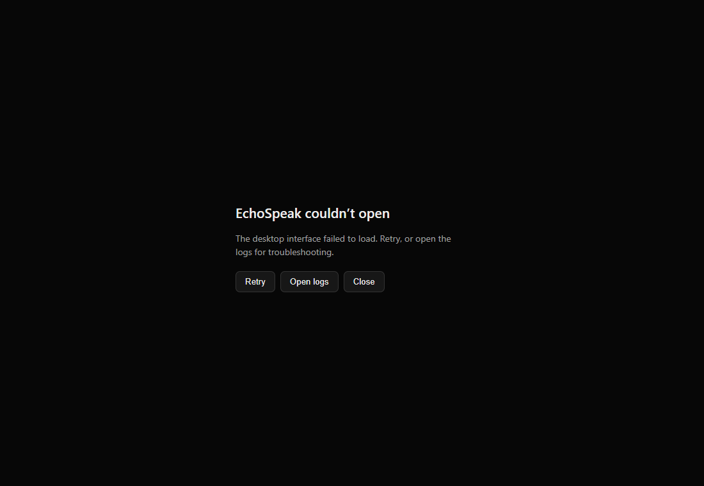
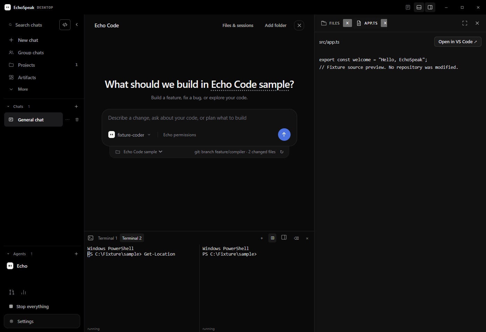
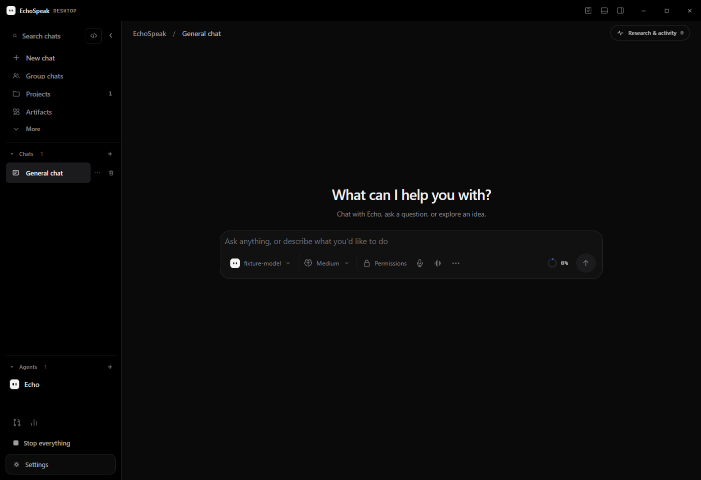
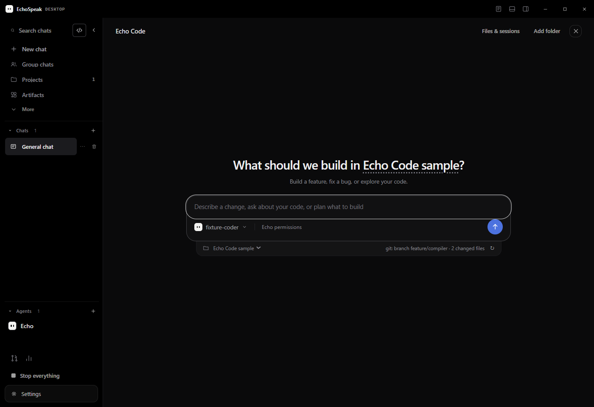
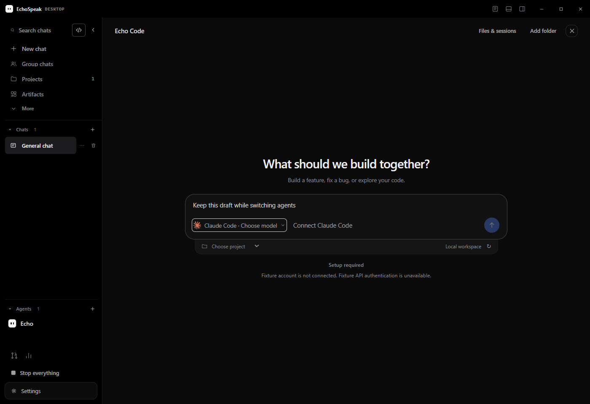
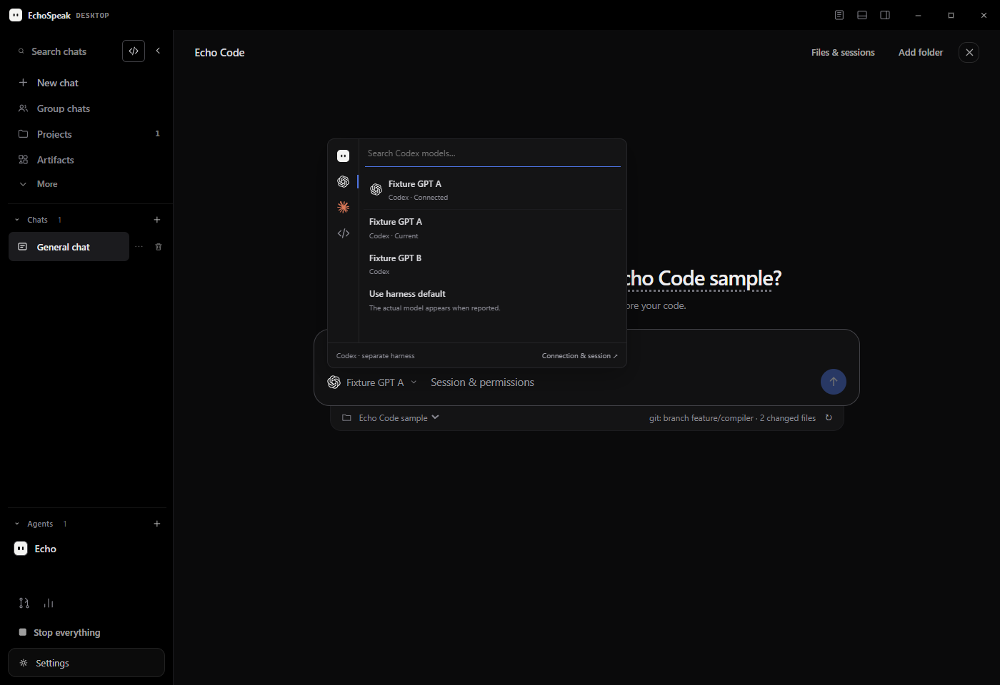
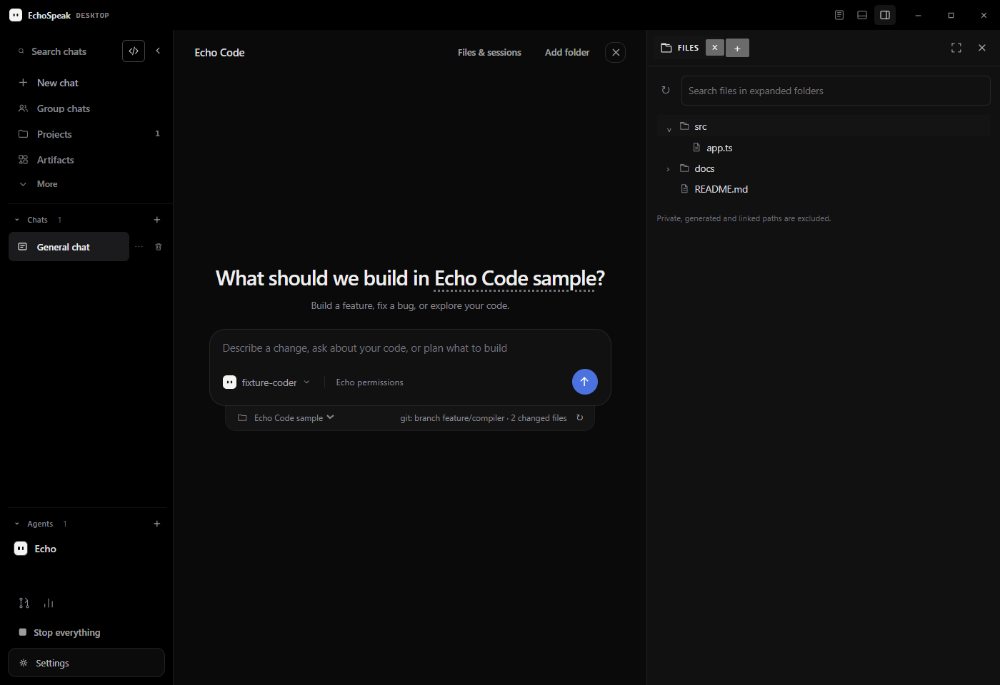
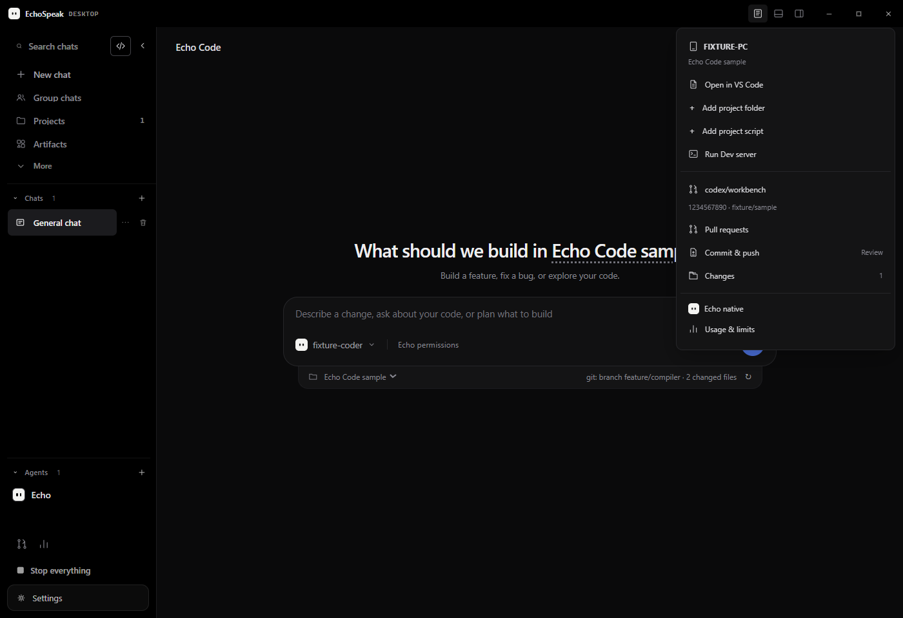
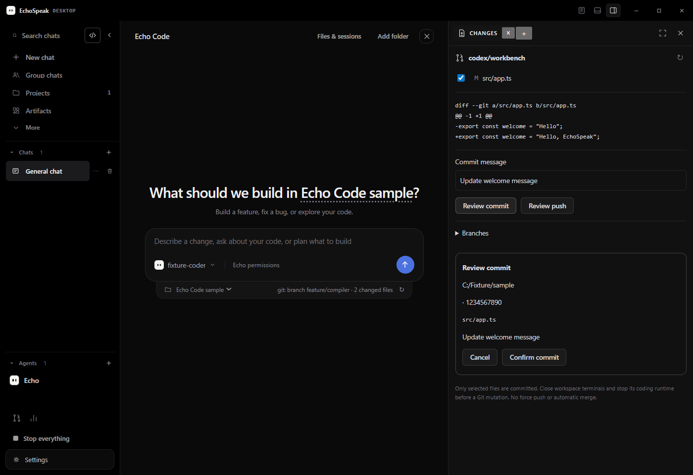
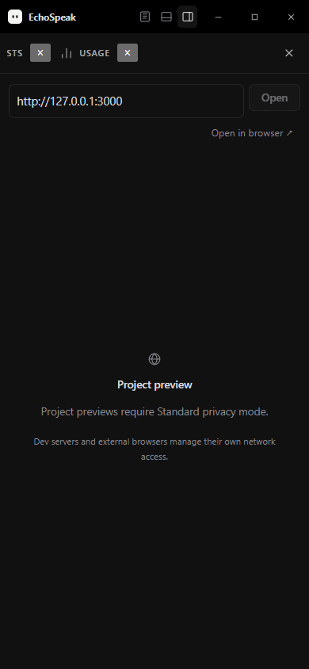

EchoSpeak 11.10.6
Workspace surfaces, a real Windows terminal and reviewed Git actions · 25 October 2026
Startup repaired; Chat aligned with Code
The first installer exposed a terminal-library import error under Tauri’s frozen prototype protection. The narrow build adaptation retains that protection, and failed desktop loads now reveal recovery controls. The installed Windows app was repaired with a backup and observed opening normally; a second launch kept one visible window.
New Chat now uses Code’s title, caption and composer baseline. Both positions match within a pixel at two desktop sizes; Code’s layout is unchanged.

The workspace stays centered
Chat and Code use the remaining content column, whether the right surfaces or bottom terminal are open. Three compact controls beside the native window buttons reveal workspace details, terminal and sidebar.



Switch agents without losing the composer
Echo, Codex, Claude and ACP keep the centered starter and unsent draft, including disconnected states. The logo rail opens the same model-row presentation as Chat. Connection details and permissions have their own popover; original harness replies appear in the main conversation.


Native model selection binds only a newly created coding session. Claude accepts an explicit model ID for its own API account; ACP reports its own model while retaining native selection control. Missing catalogs and disconnected accounts are stated plainly.
One place for files, tools and changes


Inspect, review, then apply

Execution stays with its workspace
- Interactive ConPTY terminals have scoped IDs, resize/input, multiple tabs, split views and owned process cleanup.
- Managed agent worktrees stay separate from the source checkout. Agent reconnect waits for borrowed terminal leases to close.
- Git review binds the workspace, selected paths and state. No automatic commit, force push or merge.
- Research and activity belong to the selected native conversation or original external-agent session.

Honest connected surfaces
PRs come from the owner's GitHub CLI, usage comes from what the original runtime reports, and Device identifies the current host. Missing data stays unavailable. Loopback dev previews are sandboxed; external pages open in the user's browser. Dev servers and external browsers retain their own networking.
Verified before handoff
107 backend tests, TypeScript and 192 frontend tests, 16 desktop checks, 21 browser fixture checks plus protected-startup/recovery checks and six report layouts passed. The final local 11.10.6 EXE/MSI build and frozen-backend ConPTY smoke passed. Package hashes are recorded; both installers are unsigned. Nothing was installed or published.
What still needs owner acceptance
Startup and single-instance relaunch were verified in installed WebView2. Further native frame behavior, VS Code dispatch, live dev-server preview, GitHub authentication/PRs and original provider account limits remain manual checks. Windows package results are recorded separately from source/browser fixtures. No public release is claimed.
Build and install commands ↗ · Verification record · Full architecture walkthrough